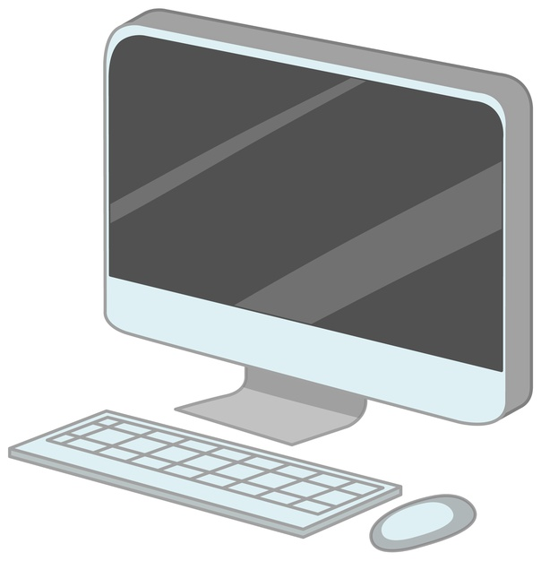

Aquí está la lista de piezas del computador con todas las piezas básicas de hardware que necesitará para un PC en funcionamiento. Cada una de ellas la veremos en detalle para que sepas que funcion tiene o como podrias emplear durante el ensamblaje de tu propio PC.
Una vez que tengas cubierto todos estos puntos, debes ir por la otra parte del hardware, que son:
Y otro elemento fundamental, el sistema operativo, el alma de tu PC. Con ello ya lo tendrás todo para disfrutar de un computador, pero uno bueno y muy poderoso.
